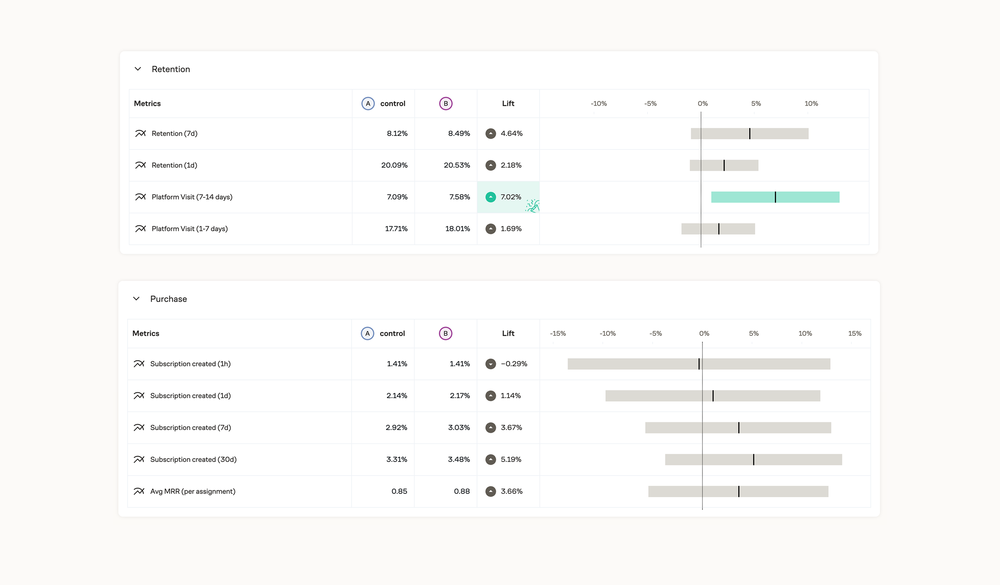

Onboarding, rebuilt
around intent
A signup flow shaped around what each user came to do.
Riverside is a platform for recording and editing studio-quality video and podcasts. I redesigned its onboarding to focus on what each new user actually came to do, and to get them to real value faster.
Role
Product Design
Type
B2C · SaaS
Scope
UX, UI, flow design, prototype
The problem
Riverside's onboarding wasn't landing. Activation was low, sitting at around 24%, and too many new users dropped off before reaching the moment the product actually pays off, their first real recording. The flow also treated everyone the same: a solo podcaster, a team recording a webinar, and someone making short marketing clips all got the same generic path, even though they showed up for completely different reasons.
The approach
I rebuilt onboarding around a simple idea: different intent should lead to a different flow. Instead of one path for everyone, the experience starts by asking what the user wants to create, then adapts. The whole flow was designed to keep people engaged, build trust step by step, and give a visible sense of progress, so reaching that first recording feels quick and obvious.

Made for how you actually work
The redesign meets people where they are. Someone recording a podcast, running a live stream, or making marketing clips each gets a path shaped around that goal, not a one-size-fits-all setup. Along the way, small touches build confidence: a clear studio setup, sensible defaults, and a preview of what they're about to make, so the product feels approachable from the very first screen.

A closer look
A few more screens from the redesigned onboarding flow.
Start with intent. Pick what you're here to create.
Set up fast. Name your studio and go.
Multiple ways in. Record, edit, or generate with AI.
One last thing. A quick question before you're in.
The results
The redesigned onboarding was validated in an A/B test against the old flow. The intent-based version lifted 7-day retention by 4.64% and platform visits (7-14 days) by 7.02%, and drove more users to subscribe, with 30-day subscription creation up 5.19% and average MRR up 3.66%.
